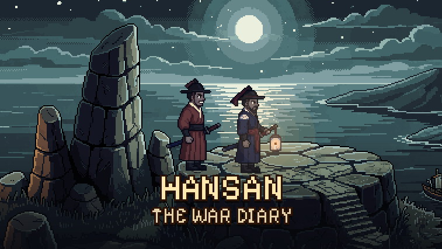

한산: 난중일기
1592년 임진왜란을 배경으로 한 스토리 중심 포인트 앤 클릭 어드벤처입니다. 역사적 소재에 창작적 해석과 고전 어드벤처 게임의 퍼즐을 더했습니다.
탐험
조선의 여러 장소를 돌아보며 단서를 발견하세요.
대화
인물들의 이야기를 듣고 선택지를 통해 진행하세요.
퍼즐
아이템을 살펴보고 조합해 문제를 해결하세요.

1592 · 역사 픽셀 어드벤처
이순신과 함께 조선의 바닷가를 탐험하고, 인물들과 대화하고, 아이템을 조합해 퍼즐을 풀어보세요.
1592년 임진왜란을 배경으로 한 스토리 중심 포인트 앤 클릭 어드벤처입니다. 역사적 소재에 창작적 해석과 고전 어드벤처 게임의 퍼즐을 더했습니다.
조선의 여러 장소를 돌아보며 단서를 발견하세요.
인물들의 이야기를 듣고 선택지를 통해 진행하세요.
아이템을 살펴보고 조합해 문제를 해결하세요.
실제 게임 스크린샷과 오프닝 영상을 이곳에서 소개합니다.
실제 플레이 스크린샷과 영상은 준비 중입니다. 데모에서 먼저 게임을 만나보세요.
무료 웹 데모를 플레이할 수 있습니다. 스토브 데모 등록은 심사 중입니다.